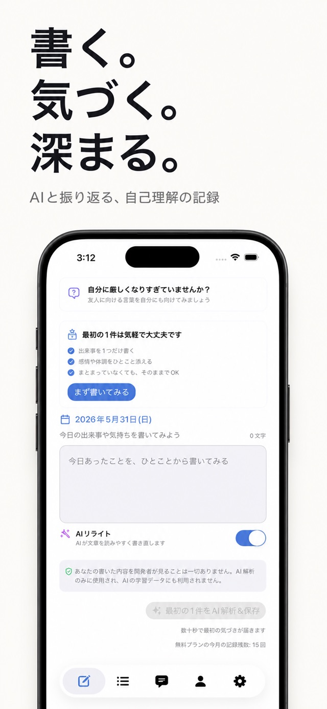
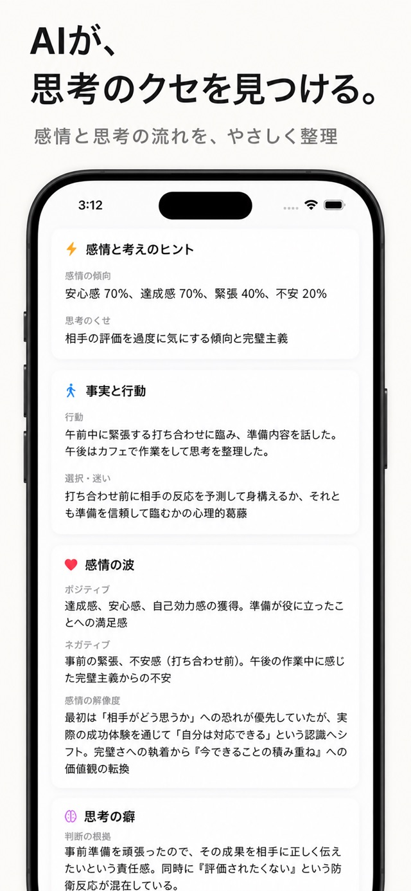

Yorishiro
An AI journal for self-understanding.
Write about your day and reflect on patterns in your thoughts and feelings. Keep your journal on iPhone and on the web.

Discover yourself, one entry at a time.
- Record events and feelings in your own words.
- AI organizes your entries and offers prompts for reflection.
- Sync your journal between iPhone and the web using the same account.

Your words, for your understanding.
Entries are processed as needed to provide AI features. Read the privacy policy for details, including deletion. AI responses support reflection; they do not provide medical advice, diagnosis or treatment.